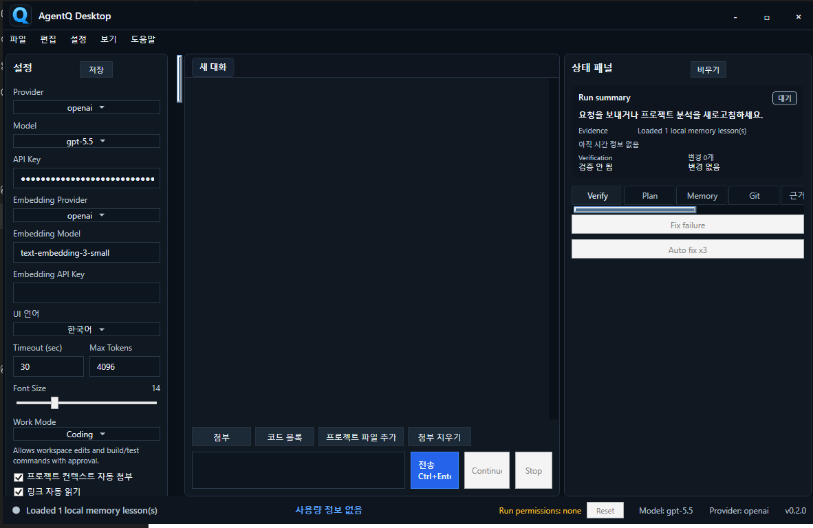
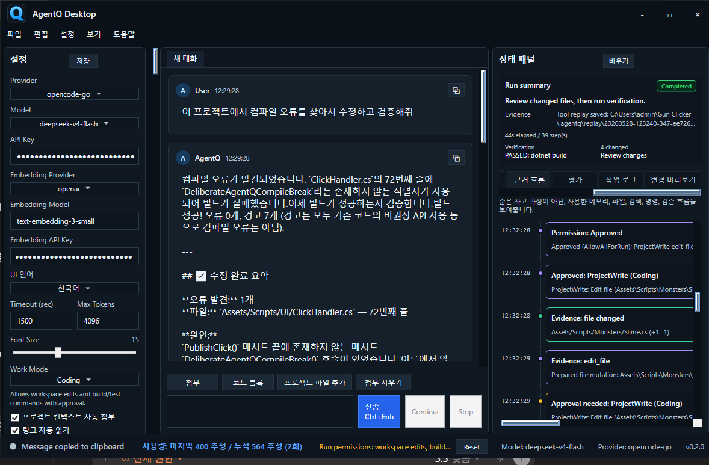
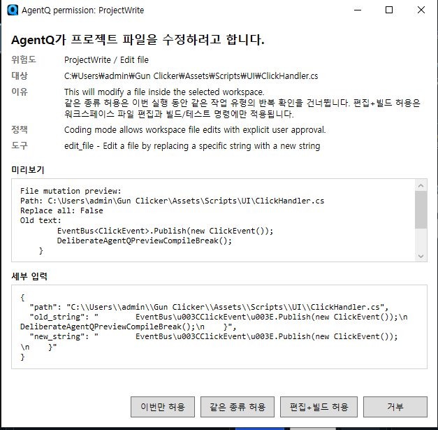
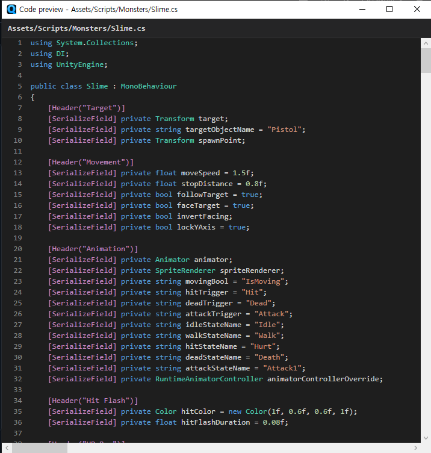

AgentQ Desktop은 로컬 프로젝트를 분석하고, 사용자의 요청에 따라 코드 검색, 원인 분석, 파일 수정, 검증 제안까지 수행하는 Windows 데스크톱 AI 코딩 에이전트입니다.
Unity/C#/웹 프로젝트를 대상으로 워크스페이스 구조를 수집하고, LLM Tool Calling을 통해 파일 읽기, 검색, 편집, 셸 명령 실행 같은 작업을 권한 기반으로 제어하도록 구현했습니다.
키워드 검색만으로 찾기 어려운 코드까지 찾기 위해 프로젝트 파일을 청크로 나누고, OpenAI Embeddings로 로컬 인덱스를 생성하는 구조를 설계했습니다.
.agentq/embeddings/chunks.jsonl에 청크와 벡터 정보를 저장하고, semantic search 결과를 keyword, symbol,
project map 신호와 함께 사용하는 hybrid search 흐름을 구성했습니다.
핵심 포인트: RAG를 단독 검색으로 쓰는 것이 아니라, 프로젝트 맵, 최근 변경 파일, 키워드 검색, 심볼 검색, 임베딩 유사도 결과를 함께 사용해 대형 코드베이스에서 필요한 맥락만 LLM에 전달하도록 설계했습니다.
AgentQ 본체는 C#/.NET으로 유지하고, JavaScript/TypeScript, Python, C++/Go/Rust 계열 분석은 별도 로컬 worker 프로세스로 분리했습니다.
TypeScript worker, Python worker, Native worker가 프로젝트 구조, 심볼, import/dependency graph, 빌드/테스트 명령 후보를 JSON으로 반환하고, AgentQ는 이 결과를 Project Map, RAG, Evidence, Planning UI에 통합합니다.
AI가 코드를 바로 덮어쓰지 않도록, 변경 전후 내용을 기반으로 라인 단위 diff를 생성하고 사용자가 변경 내용을 확인할 수 있게 했습니다.
파일 변경 기록, Git diff/status 패널, 변경 승인 상태, 스냅샷, 롤백, Tool Replay, Telemetry JSONL을 통해 에이전트의 작업 결과를 추적할 수 있도록 구성했습니다.
실행 중 발견한 프로젝트 특성, 검증 명령, 반복 실패 패턴을 learning candidate로 제안하고, 사용자가 승인하면
.agentq/memory.local.json에 lesson으로 저장하는 구조를 구현했습니다.
저장된 lesson은 다음 요청에서 사용자 입력과 관련도를 계산해 다시 컨텍스트에 포함됩니다. 예를 들어 이전 빌드 실패, 검증 명령, 자주 수정한 파일 같은 정보를 기억해 비슷한 작업에서 더 빠르게 관련 파일과 검증 흐름을 찾도록 설계했습니다.
핵심 포인트: 에이전트가 임의로 모든 것을 저장하는 방식이 아니라, 민감 정보와 위험한 명령을 필터링하고 사용자가 승인한 학습 후보만 프로젝트 메모리로 남기는 안전한 학습 흐름을 목표로 했습니다.
데모 영상에서는 Unity 프로젝트를 선택한 뒤, 사용자가 컴파일 오류 수정을 요청하면 에이전트가 관련 C# 파일을 읽고 원인을 분석합니다.
이후 수정이 필요한 파일에 대해 권한 승인 창을 표시하고, 변경 요약과 검증 제안까지 이어지는 AI 코딩 에이전트 흐름을 보여줍니다.